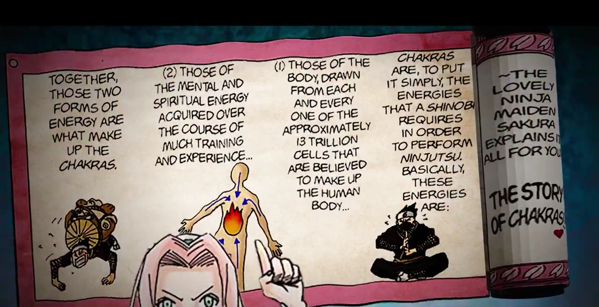
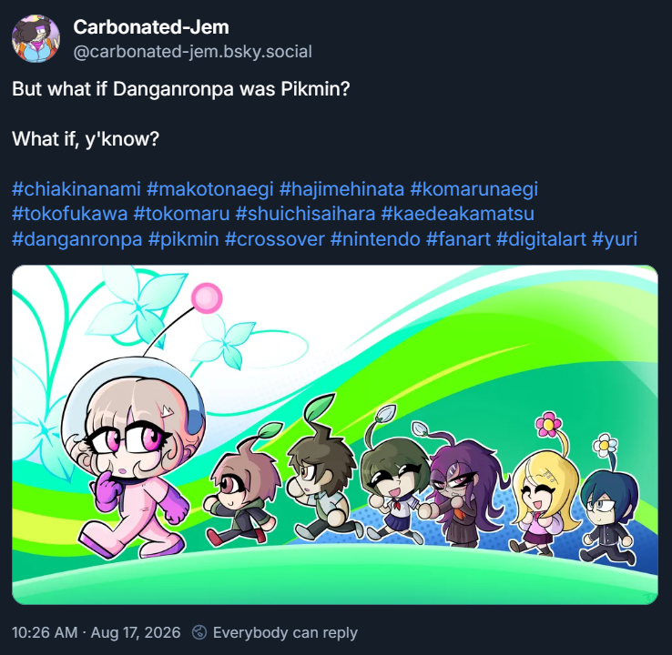
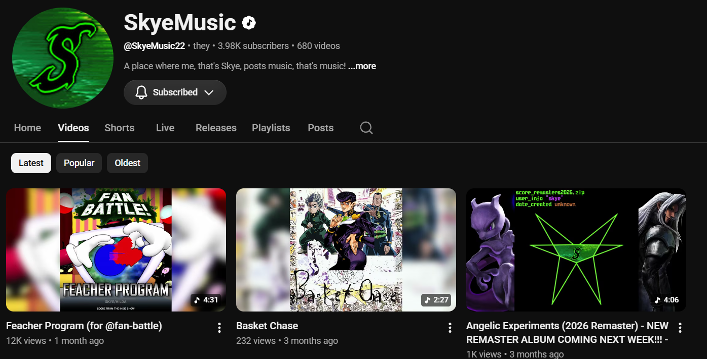

by Nerio Tabayoyong

Tiki is an artist that mainly specializes in video editing, motion graphics, asset creation, etc. He mainly does behind the scenes work for the internet show Death Battle, editing their videos and occasionally doing post-viz work for animations. DJ has been a good friend and a major source of creative inspiration. Whenever DJ is editing a video he always makes sure that there’s some movement in his edits. Whether it’s particles, a subtle movement, or something that’s in your face. DJ puts in a lot of work to keep audiences not only entertained but engaged with whatever subject he has to work on.

Carbonated-Jem is an online artist and a fan of many things. She’s been drawing for over 10 years and is working on her own original comic. Jem wears her influences on her sleeve. She’s known for her very expressive characters, bright colors, and wild composition. Whenever Jem locks in on art she gives it 100% to make something with all her passion.

Skye is a musician who mainly composes fan songs based on other series. Whether it’s songs inspired by different series, VS tracks combining the songs of two different series, and their own original songs from time to time. You can tell that Skye is passionate about the music they compose. The length of their tracks can range from 3 minutes to over 18. Skye always has a vision for how they want to score something, and will execute their idea to the best of their ability. Talking to Skye has given me great insight on their meticulous process for how they want to execute their vision.